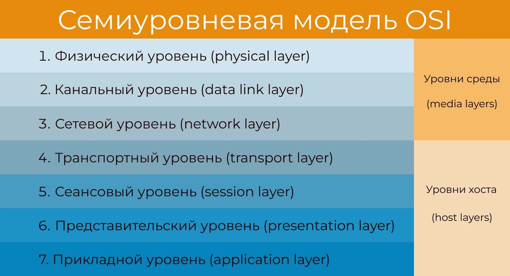

Веб тестирование
Всё о клиент-серверных архитектурах, HTTP, API, безопасности, логах и современных веб-технологиях.
Клиент-серверная архитектура
Клиент-серверная архитектура – это система распределения, в
которой одни устройства обращаются к другим для получения необходимой
информации или выполнения определенных задач. Клиенты отправляют
запросы, серверы их обрабатывают и возвращают результат.
Одноуровневая архитектура — клиент и сервер на одном уровне,
вся логика и интерфейс в одном приложении.
Двухуровневая архитектура — клиент и сервер разделены, клиент —
UI и часть логики, сервер — данные.
Трёхуровневая архитектура — клиент (UI), сервер приложений
(логика), сервер БД (данные).
Многоуровневая архитектура — добавляются промежуточные слои
(кеш, балансировщики и т.д.).
Толстый клиент — много логики на клиенте, меньше нагрузка на
сервер.
Тонкий клиент — минимум логики на клиенте, всё на сервере.
Разница между архитектурой и технологией
- Архитектура — это модель взаимодействия между компонентами системы клиентом и сервером. Ответ на вопрос "КАК организована система?"
- Структуру компонентов (клиент, сервер, БД, кэш).
- Принципы их взаимодействия (запросы, события, сообщения).
- Масштабируемость и надежность (монолит vs микросервисы).
- Технология — реализация архитектуры с помощью конкретных протоколов и инструментов (например, HTTP, WebSocket, React).Ответ на вопрос "ЧЕМ реализована система?"
- Языки программирования (Python, JavaScript).
- Фреймворки (React, Django, Spring).
- Протоколы (HTTP/3, WebSocket).
- Базы данных (PostgreSQL, Redis).
Пример: Архитектура — браузер отправляет HTTP-запрос на сервер.
Технология — используется HTTP, сервер Nginx, данные в JSON.
Типы серверов
- Веб-сервер (Nginx, Apache)
- Базы данных (MySQL, PostgreSQL)
- Файловый сервер (FTP, SMB)
- Сервер приложений (Java Spring, Node.js)
- Почтовый сервер (SMTP, IMAP, POP3)
- Прокси-сервер
Модели взаимодействия клиент-сервер
- Request-Response — клиент отправляет запрос, сервер отвечает (REST API, сайты).
- Persistent Connection — постоянное соединение (WebSocket, чаты).
- Publish-Subscribe — подписка на события (Kafka, Firebase).
- Peer-to-Peer — клиенты общаются напрямую (торренты, криптовалюты).
Облачные серверы (Cloud Servers)
IaaS — аренда виртуальных машин (AWS EC2, Google Compute
Engine).
PaaS — готовые платформы для развертывания (Heroku, Firebase).
SaaS — готовый софт (Gmail, Google Drive).
Преимущества облака
- Масштабируемость
- Отказоустойчивость
- Нет необходимости в собственном железе
URL
URL (Uniform Resource Locator) — адрес уникального ресурса в
интернете. Рекомендуется не более 2000 символов.
Микросервисы и монолиты
Монолитная архитектура — Единое приложение, где все компоненты
(UI, бизнес-логика, БД) работают в одном процессе и развертываются как
единое целое.
- + Простота разработки и развертывания
- + Производительность
- + Меньше инфраструктурных сложностей
- - Сложность масштабирования
- - Зависимость компонентов
- - Ограниченная гибкость
Микросервисная архитектура — Приложение разбито на множество
небольших независимых сервисов, каждый из которых решает свою задачу и
общается с другими через API (HTTP, gRPC, Message Queue).
- + Масштабируемость
- + Гибкость разработки
- + Независимость внедрения
- + Устойчивость
- - Сложность управления
- - Межсервисное взаимодействие
HTTP и HTTPS
HTTP (Hypertext Transfer Protocol) — это протокол прикладного
уровня, предназначенный для передачи гипертекстовых документов
(например, HTML-страниц) между клиентом (браузером) и сервером.
HTTPS (Hypertext Transfer Protocol Secure) — это безопасная
версия HTTP, которая использует шифрование через SSL/TLS для защиты
передаваемых данных.
Версии HTTP
- HTTP/1.0 — заголовки, разные типы контента
- HTTP/1.1 — Keep-Alive, кэширование
- HTTP/2 — Разработан на основе протокола SPDY, Мультиплексирование — множество запросов по одному соединению,Сжатие заголовков (HPACK),Приоритезация запросов, Бинарный протокол вместо текстового
- HTTP/3 — Разработан на основе протокола QUIC, Переход с TCP на UDP — снижение задержек, Независимость потоков — ошибки в одном потоке не влияют на другие, Быстрая установка соединения (0-RTT handshake), мультиплексирование
HTTP-методы
- GET - Назначение: Получение данных с сервера.
- POST - Создание новых данных или отправка информации на сервер.
- PUT - Назначение: Полное обновление ресурса (замена всех данных).
- PATCH - Назначение: Частичное обновление ресурса (изменение только указанных полей).
- DELETE - Назначение: Удаление ресурса.
- HEAD - Получение метаданных (заголовков) без тела ответа (как GET, но без данных).Использование: Проверка существования ресурса, валидация кэша.
- OPTIONS - Назначение: Получение списка поддерживаемых методов для ресурса (CORS-запросы).
- TRACE - Назначение: Отладка (сервер возвращает полученный запрос "как есть").Использование: Проверка изменений запроса прокси-серверами.
- CONNECT - Назначение: Установка туннеля (например, для HTTPS через прокси).Использование: В основном в прокси-серверах.
Идемпотентные методы: GET, PUT, DELETE
Неидемпотентные методы: POST
Кешируемые методы: GET, HEAD, OPTIONS
Безопасные методы: GET, HEAD, OPTIONS
Небезопасные методы: POST, PUT, DELETE, PATCH
Структура HTTP-запроса
GET /path HTTP/1.0
Host: www.example.com
User-Agent: Mozilla/5.0
Accept: text/html
Host: www.example.com
User-Agent: Mozilla/5.0
Accept: text/html
Структура HTTP-ответа
HTTP/1.1 200 OK
Content-Type: text/html
Content-Length: 123
Body
Content-Type: text/html
Content-Length: 123
Body
HTTP-коды состояния
- 1xx — информационные
- 2xx — успешные
- 3xx — перенаправления
- 4xx — ошибки клиента
- 5xx — ошибки сервера
HTTP-заголовки
-
Host, User-Agent, Accept, Authorization, Content-Type,
Cache-Control, Set-Cookie
SSL сертификат
SSL-сертификат удостоверяет подлинность сайта и позволяет
использовать зашифрованное соединение (HTTPS).
Аутентификация и Авторизация
Аутентификация — подтверждение личности пользователя.
Авторизация — проверка прав доступа.
Сессия на сайте
Сессия — промежуток времени между входом на сайт и его
закрытием.
Токен
Токен — средство авторизации для каждого запроса. Генерируются
на сервере на основе секретного ключа.
Access Token — для доступа к защищённым ресурсам, ограниченный
срок действия.
Refresh Token — для получения новых access token без повторной
аутентификации.
JWT — стандартный формат токенов (заголовок, payload, подпись).
Cashe и cookie
Кэш — это механизм хранения копий ресурсов (HTML, CSS, JS,
изображения и т.д.) локально в браузере или промежуточных серверах
(CDN), чтобы ускорить загрузку страниц.
Цель:
- Снизить нагрузку на сервер
- Ускорить загрузку страниц
- Уменьшить объём передаваемых данных
Виды кэширования:
- Browser cache - Хранится в браузере. Самый распространённый тип.
- Memory cache - Хранится в оперативной памяти. Быстрее, но очищается при перезагрузке.
- Disk cache - Хранится на диске. Медленнее, но сохраняется между сессиями.
- Service Worker cache - Управляемый JS-скриптом. Используется в PWA.
- CDN cache - Кэшируется на серверах Content Delivery Network.
Cookie — это небольшие фрагменты данных, которые сервер
отправляет клиенту (браузеру) с помощью HTTP-заголовка Set-Cookie.
Браузер сохраняет эти данные и отправляет их обратно на сервер при
последующих запросах.
Основные цели использования:
- Идентификация пользователя
- Управление сессией (логин/выход)
- Персонализация содержимого
- Трекинг активности
Виды куков
- Сессионные куки - Хранятся только во время сеанса браузера. Они удаляются автоматически при закрытии браузера.
- Перманентные куки - это куки, которые сохраняются на устройстве пользователя даже после закрытия браузера . Они удаляются только по истечении срока действия, указанного в параметрах Expires или Max-Age.
- Первичные куки - это куки, которые устанавливаются тем сайтом, который вы просматриваете прямо сейчас . То есть домен в адресной строке совпадает с доменом, устанавливающим куку.
Заголовки безопасности кук:
- Secure: передавать только по HTTPS
- HttpOnly: недоступны из JavaScript
- SameSite=Strict/Lax/None: защита от CSRF
API
API (Application Programming Interface) — это набор правил и
методов , с помощью которых одно программное обеспечение может
взаимодействовать с другим.
Общая схема взаимодействия
- Клиент (браузер, мобильное приложение, сервер) отправляет запрос к API.
- Сервер получает запрос, обрабатывает его.
- Сервер формирует ответ (обычно в формате JSON или XML).
- Ответ отправляется обратно клиенту.
Основные компоненты API
- Endpoint - URL, по которому доступен определённый ресурс. Например:/api/users
- Методы HTTP - GET, POST, PUT, DELETE и др. Определяют тип операции
- Заголовки (Headers) - Содержат метаданные: авторизацию, тип данных и т.д.
- Параметры - Данные, передаваемые в запросе(query parameters,path parameters, body)
- Тело запроса/ответа (Body) - Данные, передаваемые в запросе/ответе.Содержит данные, например, JSON или XML
Виды API
REST API — архитектурный стиль, работает через HTTP, возвращает
JSON или XML.
SOAP API — использует XML, строгие стандарты, часто в
корпоративных приложениях.
GraphQL — язык запросов, позволяет получать только нужные
данные.
WebSocket API — двусторонняя связь, подходит для чатов и
онлайн-игр.
gRPC API — Высокопроизводительный RPC-протокол, использующий
Protobuf
REST
REST (Representational State Transfer) — это архитектурный
стиль для создания API. Он основан на использовании стандартных
методов HTTP.
Плюсы
- Простота и легкость
- Гибкость и универсальность
- Совместимость с браузерами
- Меньшая нагрузка на сервер
Минусы
- Ограниченная стандартная спецификация
- Нет встроенных механизмов безопасности
Основные принципы REST:
- Stateless (без сохранения состояния) — каждый запрос содержит всю необходимую информацию.
- Uniform Interface (единый интерфейс) — стандартные пути и методы.
- Client-server (клиент-сервер) — разделение клиентской и серверной логики.
- Cacheable (кэшируемость) — ответы могут быть кэшированы.
- Layered system (многоуровневая система) — клиент может взаимодействовать с промежуточными слоями.
Авторизация в API:
- API Key — Простой ключ в заголовке или параметре
- Basic Auth — Логин/пароль в заголовке Authorization
- Bearer Token — Токен в заголовке: Authorization: Bearer token
- OAuth 2.0 — Стандарт авторизации, часто используется в соцсетях
- JWT (JSON Web Token) — Самостоятельный токен, содержащий полезную нагрузку
SOAP
SOAP — Он использует формат XML для передачи данных и может
работать поверх различных транспортных протоколов: HTTP, SMTP, TCP и
др.
Плюсы
- Строгая спецификация и стандарты
- Встроенные механизмы безопасности
Минусы
- Сложность и объемность
- Требовательность к ресурсам
- Меньшая гибкость
- Не всегда совместим с браузерами
Как работает SOAP?
- Клиент отправляет SOAP-запрос на сервер.
- Сервер получает запрос, парсит XML, выполняет нужную операцию.
- Сервер возвращает ответ в виде XML-документа.
- Клиент получает и обрабатывает результат.
WSDL (Web Services Description Language)
WSDL — это XML-документ, описывающий SOAP-сервис:
- Какие операции доступны
- Какие параметры принимают
- Какие данные возвращаются
- По какому URL вызывается сервис
Web-Service
Web-Service (веб-сервис) — это программная система,
предназначенная для взаимодействия между приложениями через интернет с
использованием стандартных протоколов и форматов данных.
Основные характеристики веб-сервисов:
- Работа через сеть – доступен по HTTP/HTTPS.
- Стандартизированный обмен данными – использует XML, JSON, SOAP, REST и другие форматы.
- Независимость от платформы и языка – клиент и сервер могут быть написаны на разных языках (Java, Python, C# и т. д.).
- Модульность — может быть частью более крупной системы (например, микросервиса).
Типы веб-сервисов:
- SOAP (Simple Object Access Protocol) - Использует XML для обмена сообщениями. Жёсткие стандарты (WSDL для описания сервиса).
- REST (Representational State Transfer) – Работает через HTTP (GET, POST, PUT, DELETE).Использует JSON (реже XML).
- GraphQL (альтернатива REST) – Позволяет клиенту запрашивать только нужные данные.
Все веб-сервисы — это API, но не все API — веб-сервисы.
JSON
JSON — текстовый формат обмена данными, основанный на
JavaScript.
Снифферы трафика
Снифферы — то программа или устройство, которое перехватывает и
анализирует сетевой трафик в реальном времени. Оно позволяет увидеть
все данные, передаваемые между устройствами в сети: IP-адреса, порты,
содержимое пакетов и даже текстовые данные (например, HTTP-запросы).
- Перехват данных
- Анализ трафика
- Мониторинг безопасности
- Диагностика сети
Брокеры сообщений (Kafka)
Apache Kafka — распределённая платформа для передачи, хранения
и анализа сообщений в реальном времени.
- Продюсер — отправляет сообщения
- Потребитель — получает сообщения
- Брокер — передаёт сообщения
- Топик — виртуальное хранилище сообщений

Применение Kafka
- Аналитика в реальном времени
- Сбор логов
- Интеграция микросервисов
- Системы очередей
- Мониторинг и алертинг
Модель OSI
OSI — семиуровневая модель взаимодействия сетевых устройств.

Физический уровень — передача данных через среду (кабели,
беспроводные каналы).
Канальный уровень — передача данных между устройствами в
локальной сети.
Сетевой уровень — маршрутизация и адресация.
Транспортный уровень — контроль передачи данных, надежность.
Сеансовый уровень — управление сессиями связи.
Представительный уровень — преобразование, шифрование, сжатие
данных.
Прикладной уровень — доступ приложений к сети и ресурсам.
Модель TCP/IP
Модель TCP/IP — это концептуальная модель, описывающая, как
данные передаются через сеть. Она легла в основу интернета и
определяет стандарты взаимодействия сетевых устройств.
Уровни модели TCP/IP
- Прикладной уровень (Application Layer) - Обеспечивает взаимодействие приложений с сетью. Протоколы HTTP, HTTPS, FTP, SMTP, DNS, SSH
- Транспортный уровень (Transport Layer) - Передача данных между хостами, контроль ошибок, потока, доставки. Протоколы TCP, UDP
- Сетевой уровень / Интернет-уровень (Internet Layer) - Маршрутизация пакетов между сетями (по IP-адресам). Протоколы IP, ICMP, ARP, IGMP
- Канальный (Link/Network Access) - Передача данных внутри одной сети (по MAC-адресам). Протоколы Ethernet, Wi-Fi, PPP, MAC
TCP и UDP
TCP (Transmission Control Protocol) — Надежная доставка данных
с установкой соединения.
- Гарантированная доставка – если пакет потерялся, TCP отправит его заново.
- Контроль перегрузок – автоматически регулирует скорость передачи, чтобы не перегружать сеть.
- Порядок пакетов – данные приходят в том же порядке, в котором были отправлены.
- Высокие накладные расходы – из-за подтверждений и контроля.
- Задержки – не подходит для реального времени (видеозвонки, игры).
UDP (User Datagram Protocol) — Быстрая, но ненадежная передача
без установки соединения.
- Минимальные задержки – нет подтверждений и повторных отправок.
- Низкие накладные расходы – меньше служебных данных в заголовках.
- Нет гарантии доставки – потерянные пакеты не восстанавливаются.
- Нет контроля порядка – пакеты могут приходить в разной последовательности.
QUIC
QUIC (Quick UDP Internet Connections) — Современный протокол на основе
UDP с улучшенной безопасностью и скоростью, обеспечивает
мультипоточность, приоритезацию, сквозное шифрование. Лежит в основе
HTTP/3.
- Быстрое установление соединения – 0-RTT или 1-RTT вместо 3-way handshake в TCP
- Встроенное шифрование– использует TLS 1.3 по умолчанию
- Устойчивость к смене сети – например, при переходе с Wi-Fi на мобильный интернет
- Мультиплексирование – несколько потоков данных в одном соединении (как в HTTP/2).
- Не все сети поддерживают – некоторые фаерволлы блокируют QUIC
Логи
Логи — записи о событиях, ошибках, действиях пользователей и
состоянии системы.
Виды логов
- Логи ошибок
- Логи производительности
- Логи доступа
- Логи тестирования
- Логи событий
Уровни логирования
- DEBUG — для отладки
- INFO — обычные события
- WARNING — потенциальные проблемы
- ERROR — ошибки, не останавливающие приложение
- CRITICAL/FATAL — критические ошибки